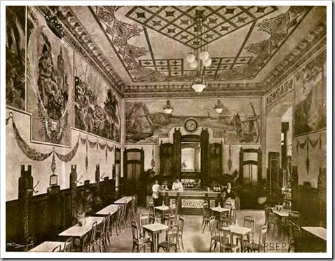

Necesitas un buen descanso. Tienes ganas de un buén café, entra en nuestra cafetería. Desconecta y disfruta de bocados preparados con ingredientes selectos por nuestros profesionales
Grupo Las horas somos una empresa líder en el sector de la restauracion premium con cafeterías y restaurantes situados en los enclaves más emblemáticos de las ciudades de Madrid, Valencia, Barcelona y Sevilla. Nuestros locales, ubicados siempre en enclaves privilegiados, se caracterizan por una arquitectura y decoración únicas, así como por una cuidada presentación de su comida, siempre de máxima calidad. Somos música, arte y cultura, pero sobre todo, somos un grupo de personas trabajando para hacer sentir experiencias únicas a nuestros clientes.
Carta
Entrantes fríos
Jamón iberico de bellota Cinco Jotas 5J al corte, 50gr-12,50€
pan de cristal y tomate / 100gr -22,50€
Anchoas 000 López del Cantábrico sobre base de 2,95€
tomate rayado (ud.)
Ensaladilla rusa 8,50€
Nuestro ceviche de corvina del Mediterráneo con 12,50€
aliño de maracuyá y granizado de naranjas
valencianas